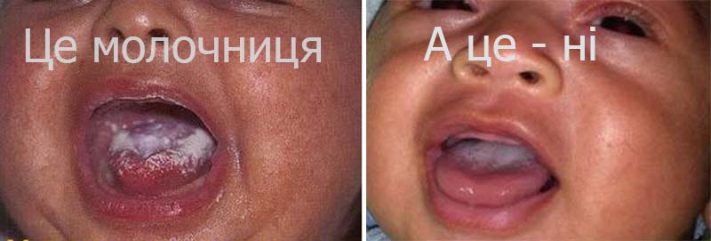

Молочниця під час грудного вигодовування

фото звідси
Молочниця або кандидоз – це інфекція шкіри та слизових оболонок, яку викликають дріжджоподібні грибки роду Candida, найчастіше - Candida albicans.
Цей збудник є нормальним жителем мікрофлори шлунково-кишкового тракту. Лише в несприятливих для нас чи сприятливих для грибка умовах, виникає запальний процес. Прояви ми можемо бачити у вигляді пелюшкового дерматиту чи стоматиту у дітей, запалення сосків чи вульвовагініту у мами. До причин можна віднести зниження імунітету та стійкості до умовно-патогенної флори в післяпологовому періоді (застосування антибіотиків, гормонів), втома, стрес та нестача сну, цукровий діабет чи анемія у мами, травмування сосків через неправильне прикладання дитини до грудей, сауна-ефект в одноразових підгузках чи одноразових гігієнічних прокладках. Оскільки мама з дитиною постійно перебувають у тісному контакті і мама підтримує гігієну дитини, виникнення молочниці в обох є взаємопов’язаним явищем.
Щоб діагностувати молочницю у мами часто достатньо зовнішніх ознак та зміни відчуттів:
- Соски червоні чи рожеві, набряклі, можлива сухість, лущення, міхурці та тріщини.
- Інтенсивна печія чи біль поверхні соска, яка з’являється в середині, посилюється під кінець і може тривати по завершенню годування, навіть при дотику білизни чи рук до сосків. Часто є потреба застосувати “дихаючі” молокозбірники, щоби виключити контакт сосків з білизною (біль при тріщинах частіше виникає на початку годування і стає менш інтенсивним під кінець)
- Прострілюючий біль всередині молочної залози під час годування, що може іррадіювати в грудну клітку, спину та руку.
- Інколи є прояви вагінальної молочниці чи кандидозу ротової порожнини у мами.
Прояви у дитини:
- Молочно-білі плями чи бляшки на слизовій стінок порожнини рота, що можуть викликати дискомфорт та біль під час їжі, інколи підвищення температури.
- Молочно – білий, подібний на сир, наліт на язику. На відміну від нальоту, утвореного грудним молоком, кандидозний наліт знімається важко, з утворенням ранок.
- Почервоніння та яскраво-червоний плямистий чи папульозний висип в ділянці підгузків, що не знімається звичними засобами з підсушуючим (деситин, судокрем, цинк – саліцилова мазь) чи ранозагоювальним (бепантен, ланолін) ефектом.
Треба врахувати, що в інфікованої дитини може і не бути жодних симптомів.
Чому ми звертаємо на це увагу:
- Біль викликає пригнічення виділення гормонів лактації та зменшення кількості молока.
- Дитина може неефективно смоктати груди, також негативно впливаючи на лактацію.
- Молочниця може стати причиною закупорки проток та лактостазу.
Що робити?
Для підтвердження діагнозу можна зробити содовий тест. Розчиняємо 1ч.л. соди у 100 г теплої води. В цей розчин можна занурити сосок на 30-60 сек чи рясно обмити ватним диском, змоченим у розчині. Якщо після цього настає полегшення печіння – найбільш ймовірно, у вас молочниця. Запам’ятайте, содовий розчин та протирання содою не є методом лікування кандидозної інфекції!
Необхідно звернутися до спеціаліста. Якщо ви запідозрили, що:
- у вас інфекція сосків – до дерматолога;
- у вас вульвовагініт – до гінеколога;
- у дитини пелюшковий дерматит чи стоматит – до педіатра - для виключення інших захворювань, що схожі за симптомами.
Проте пам’ятайте, що лікування обов’язкове для пари Мама-Дитина, навіть якщо симптоми є лише у одного. Крім призначених фахівцем ліків, надзвичайно важливими є: прикладання, режим, гігієна, дієта та лікування.
Прикладання: у першу чергу потрібно виправити прикладання до грудей – це чи не найважливіший етап лікування. Молочниця може розвинутися в немовлячому віці внаслідок застосування дурника чи догодовування з пляшки (тому ці речі повинні опинитися в смітнику одразу ж після появи симптомів) чи у старшому віці - через прорізування зубів та неспокій біля грудей. Кандида харчується цукрами грудного молока, тому варто попрацювати над тим, щоби дитина гарно прикладалася. При правильному прикладанні сосок знаходиться під м’яким піднебінням і молоко потрапляє напряму в глотку, оминаючи ротову порожнину.
Режим: годуйте часто, можна скоротити тривалість годування. Починайте з груді, яка менше болить. Якщо біль є нестерпним, у крайньому випадку можна перейти на зціджування та годування альтернативними методами (чашка, ложка, шприц) доки біль не зменшиться.
Все зціджене під час лікування молоко використайте і не зберігайте, оскільки заморожування не знищує грибки, і є ймовірність повторного зараження дитини.
Гігієна:
- Мийте руки гарячою водою з милом до та після кожного годування, зміни підгузка та походу в туалет.
- Не використовуйте одноразові прокладки для грудей. Якщо є гостра потреба, то змінюйте після кожного годування.
- Тримайте соски в сухості. Не використовуйте засобів для зволоження, що містять ланолін чи пантенол.
- Використовуйте лише бавовняну зручну білизну чи прокладки, які можна термічно обробити (кип’ятіння чи прасування)
- Кип’ятіть будь-який предмет, що може потрапити до рота дитини (іграшки, прорізувачі, накладка чи дурник) протягом 20 хв щодня. Можна кип’ятити у розчині соди.
Дієта:
- Пийте зелений чай 3-4 рази на добу. Це сприятиме очищенню організму від дріжджів.
- Поповніть раціон кисломолочними продуктами. Також варто приймати внутрішньо лактобактерії.
- Виключіть з раціону будь який цукор та дріжджі (солодощі, випічка, алкоголь, солодкі напої)
Лікування:
- Полягає в застосуванні зовнішніх засобів, що містять протигрибкові речовини. Зазвичай всі препарати є сумісні з грудним вигодовуванням. Ви можете перевірити сумісність особисто, на сайті e-lactancia.org.
- Якщо вам виписали крем чи мазь, то її варто змивати перед годуванням, адже вона містить в своєму складі парафін.
- Після початку застосування протигрибкових препаратів через 24-48 годин ви маєте відчути полегшення. Інколи легше стає після першого нанесення. Можливе й тимчасове погіршення, попри яке лікування потрібно продовжувати.
- Протирання слизової рота чи сосків содовим розчином, може ще більше травмувати їх та спричиняти біль. Зверніть увагу, що застосування розчину бури в гліцерині є протипоказаним через токсичність цього препарату для дитини.
В разі відсутності ефекту від лікування протягом 72 годин варто звернутися до лікаря для зміни препарату чи призначення системних протигрибкових засобів, також сумісних з грудним вигодовуванням. Припиняти грудне вигодовування на час лікування немає потреби.
Медичні препарати як для дитини, так і для мами має призначати лікар, після очного огляду. Лікування завжди триває тиждень після зникнення симптомів. В разі завчасного припинення лікування молочниця може дати про себе знати знову.
Статтю редагувала: Юля Олех